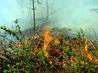
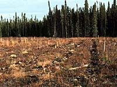
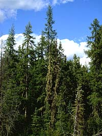

Natural Disturbances
Human Influences
Classifications
Climax Communities
Beaver Pond Example
The forest is in a constant stage of change. Change in the forest is known as succession, the gradual and continuous process by which one habitat is replaced by another involving both living and non-living components. Even though it may look the same year after year, the natural environment around us is constantly changing. |

Left to itself, a forest in northern Saskatchewan goes through a cycle of growth that takes over a hundred of years. During this time, the forest is subjected to damage from agents of change, both natural and human-influenced. The older the forest, the more vulnerable it is to these forces. |
Natural Disturbances
Fire is a major force altering existing ecosystems.
Natural occurring fires, started
by lightening, are common in Saskatchewan's northern forests.
Some plant species actually require fire to stimulate their regeneration.
The cones of the jack pine, for example, do not readily open
to release their seeds until they have been subjected to great
heat.
 This adaptive characteristic, which helps the tree get a quick start on growth immediately after a fire opens up a new area in the forest, is a big advantage because there is always competition among plants for space to grow. To maximize their chance for reproduction, trees produce seeds in huge numbers but few seeds find suitable conditions in which they can thrive. |
After a fire has cleared an area of trees, the jack pine seeds can germinate and grow quickly; there is a good supply of nutrients in the soil from the ashes of the burned forest and there are no trees to shade the growing seedlings from the sun. |
Despite these benefits, fires may be suppressed where they endanger human lives, or property, or the economic value of the timber. |
Other disturbances are disease, insect infestation and severe weather in the form of snow, ice, and strong winds. These environmental disturbances also help the forest to make space for new species of plants and wildlife. |
We have the ability to influence some of these disturbances. In order to protect valuable timber, important wildlife habitat, and recreational areas, it is necessary to control serious insect and disease infestations. If left unchecked, insects, such as the spruce budworm, will defoliate millions of hectares of trees. |

Once trees have been weakened by insect attacks, disease often sets in. Some common diseases in Saskatchewan are arrnillaria root rot and dwarf mistletoe. Dutch elm disease, which attacks American elms, is rapidly making its appearance in the province. |
Timber harvesting and logging, like forest fires, are disturbances that initiate succession in the forest. Concern is raised when large tracts of a forest are set back to an early successional stage. |
Therefore, in a regional forest management plan, a forester may decide to harvest the trees in various sites at different times. After each harvest, succession begins to re-establish the forest. This practice results in a variety of stages of growth adding diversity to the area being managed. |
Succession can be classified as either primary or secondary.
- primary
succession - occurs on bare areas not previously supporting vegetation.
Examples include areas of water, sand or rock. Primary succession
begins with soil building; developing from primitive plants (colonizers)
reacting with the rock over long periods of time to eventually
provide bits of soil that, in time, will support larger vegetation.
With the accumulation of soil, new plants germinate, grow and
reproduce to begin the stages of a new succession.
- secondary succession - occurs in areas in which vegetation does grow, but which have been altered by such external forces as fire, logging, and land clearing.
Establishment of a Climax Community
 After a large scale ecological disturbance, plant species suited to the new conditions germinate, grow and reproduce to successfully invade the vacant ecological niches. |
Grasses, fireweed, pea vine, shrubs and willows are usually the first to develop in burned over areas. As these plants increase in size and influence, competition and the changes they cause in soil and light conditions help shape the direction of change for the whole community. |

As a result, other species may germinate, grow and reproduce to become a new part of the area. Fast-growing trees such as poplar (shown left) and birch are usually the first trees to appear in a cleared area and may be as much as one meter high after only five years. These trees are referred to as the pioneer species. They thrive in the full sunlight and grow rapidly, but they are short-lived. As they grow, they alter the open space and change conditions of the environment, creating some shade, penetrating the soil with their roots, trapping rainfall and slowing winds that blow through the once opened space. They gradually transform the environment they themselves were originally adapted to, to the point where they lose the ability to compete with invading species that are better adapted to the new conditions. |
 The rate of change becomes slower as the community grows older until there appears to be no change. This is the final change of succession in the ecosystem and is called the climax community. Remember that forests are complex, dynamic communities that are continually evolving at varying rates. Even a climax community is constantly undergoing changes. At any time in the progression from the beginning to the climax, a new disturbance may interrupt the series and create a new beginning. In Saskatchewan, climax communities are relatively uncommon due to the disturbances present in our province. |
The slow process of natural regeneration has maintained the forest cover over much of Saskatchewan's boreal forest region for thousands of years. If we wish to meet the ever-growing demand for wood products today, however, forest managers must take a hand in stimulating regeneration and speeding up the rate of growth in order to balance renewal and removal. |
Forest Succession example: Beaver Pond
A colony of beavers dam a stream, creating an open pond in the forest, and the surrounding trees die. |
Plants that like damp conditions thrive around the margins of pond. |
As these plants complete their life cycle and die, they add to the accumulating organic matter which is making the pond shallower. |
Some years, pond begins to dry out and pond-edge plants (cattails and sedges) take over inside of dried pond. |
Around the ponds edges the plants are being replaced by shrubs. |
The shrubs are replaced by trees... |